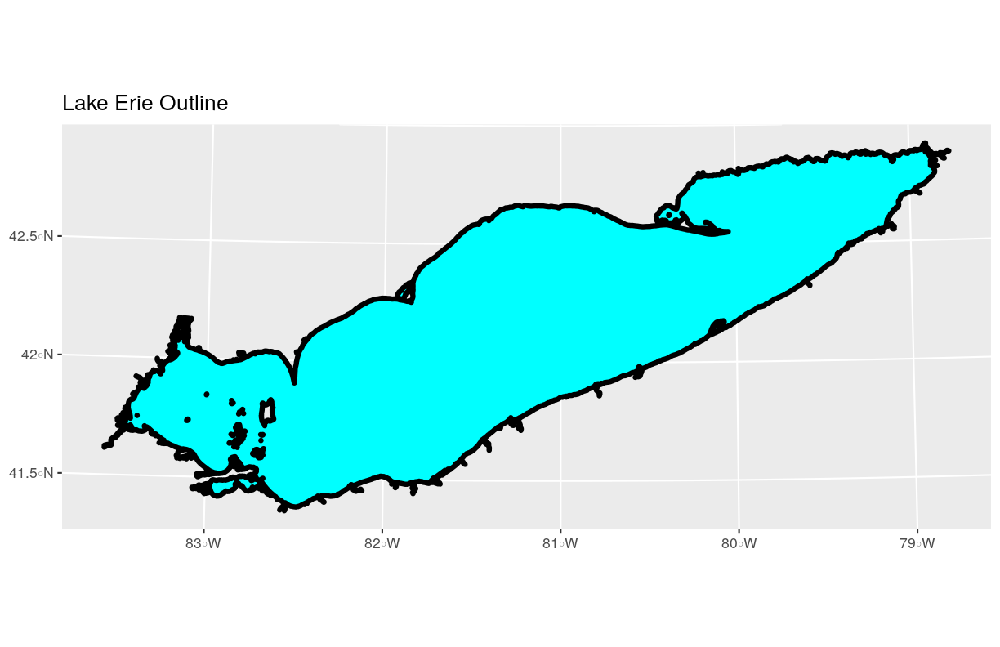

Open and Plot Shapefiles in R
Overview
Teaching: 20 min
Exercises: 10 minQuestions
How can I distinguish between and visualize point, line and polygon vector data?
Objectives
Know the difference between point, line, and polygon vector elements.
Load point, line, and polygon shapefiles into R.
Access the attributes of a spatial object in R.
Things You’ll Need To Complete This Episode
See the lesson homepage for detailed information about the software, data, and other prerequisites you will need to work through the examples in this episode.
In this episode, we will introduce the fundamental principles, packages and metadata attributes that are needed to work with vector data in R. We will open and plot point, line and polygon vector data stored in shapefile format in R. In later episodes, we will learn how to work with raster and vector data together and combine them into a single plot.
Import Shapefiles
We will use the sf package to work with vector data in R. Notice that the
rgdal package automatically loads when sf is loaded. We will also use the
raster package, which we will work with in more detail in later episodes, so we can explore raster and vector spatial metadata using similar commands. Make sure you have the sf library loaded.
library(sf)
The shapefiles that we will import are:
- A polygon shapefile representing the outline of Lake Erie
- A line shapefile representing bathymetry contours
The first shapefile that we will open contains the outline of Lake Erie. To
import shapefiles we use the sf function st_read(). st_read() requires
the file path to the shapefile.
Let’s import our outline:
erie_outline <- st_read(
"data/Lake_Erie_Shoreline/Lake_Erie_Shoreline_utm.shp")
Reading layer `Lake_Erie_Shoreline_utm' from data source `/home/jose/Documents/Science/Workshops/2020-02_glatos/glatos-spatial_workshop_materials/_episodes_rmd/data/Lake_Erie_Shoreline/Lake_Erie_Shoreline_utm.shp' using driver `ESRI Shapefile'
Simple feature collection with 1 feature and 7 fields
geometry type: POLYGON
dimension: XY
bbox: xmin: 285728.3 ymin: 4580281 xmax: 682178.4 ymax: 4752964
epsg (SRID): NA
proj4string: +proj=utm +zone=17 +ellps=GRS80 +units=m +no_defs
Shapefile Metadata & Attributes
When we import the Lake_Erie_Shoreline shapefile layer into R (as our
erie_outline object), the st_read() function automatically stores
information about the data. We are particularly interested in the geospatial
metadata, describing the format, CRS, extent, and other components of
the vector data, and the attributes which describe properties associated
with each individual vector object.
Data Tip
The Explore and Plot by Shapefile Attributes episode provides more information on both metadata and attributes and using attributes to subset and plot data.
Spatial Metadata
Key metadata for all shapefiles include:
- Object Type: the class of the imported object.
- Coordinate Reference System (CRS): the projection of the data.
- Extent: the spatial extent (i.e. geographic area that the shapefile covers) of the shapefile. Note that the spatial extent for a shapefile represents the combined extent for all spatial objects in the shapefile.
We can view shapefile metadata using the st_geometry_type(), st_crs() and
st_bbox() functions. First, let’s view the geometry type for our outline
shapefile:
st_geometry_type(erie_outline)
[1] POLYGON
18 Levels: GEOMETRY POINT LINESTRING POLYGON MULTIPOINT ... TRIANGLE
Our erie_outline is a polygon object. The 18 levels shown below
our output list the possible categories of the geometry type.
Now let’s check what CRS this file data is in:
st_crs(erie_outline)
Coordinate Reference System:
No EPSG code
proj4string: "+proj=utm +zone=17 +ellps=GRS80 +units=m +no_defs"
Our data in the CRS UTM zone 17N. The CRS is critical to
interpreting the object’s extent values as it specifies units. To find
the extent of our outline, we can use the st_bbox() function:
st_bbox(erie_outline)
xmin ymin xmax ymax
285728.3 4580281.1 682178.4 4752964.4
The spatial extent of a shapefile or R spatial object represents the geographic “edge” or location that is the furthest north, south east and west. Thus is represents the overall geographic coverage of the spatial object.
 Image Source: National Ecological Observatory Network (NEON).
Image Source: National Ecological Observatory Network (NEON).
Lastly, we can view all of the metadata and attributes for this shapefile object by printing it to the screen:
erie_outline
Simple feature collection with 1 feature and 7 fields
geometry type: POLYGON
dimension: XY
bbox: xmin: 285728.3 ymin: 4580281 xmax: 682178.4 ymax: 4752964
epsg (SRID): NA
proj4string: +proj=utm +zone=17 +ellps=GRS80 +units=m +no_defs
OBJECTID PERIMETER LAKE_NAME ID ReferenceC ShapeSTAre ShapeSTLen
1 1 2445211 Lake Erie 1 60402132 25830205908 2445211
geometry
1 POLYGON ((643010.3 4749291,...
Spatial Data Attributes
Now we will explore how to use spatial data attributes stored in our data to plot different features.
Plot a Shapefile
Let’s visualize the data in our sf object using the ggplot package. Unlike
with raster data, we do not need to convert vector data to a dataframe before
plotting with ggplot.
We’re going to customize our boundary plot by setting the size, color, and fill
for our plot. When plotting sf objects with ggplot2, you do not need to use
the coord_sf() coordinate system.
library(ggplot2)
ggplot() +
geom_sf(data = erie_outline, size = 1.5, color = "black", fill = "cyan1") +
ggtitle("Lake Erie Outline") +
coord_sf()

Challenge: Import Line and Point Shapefiles
Using the steps above, import the bathymetry_lake_erie layer into R. Call the object
erie_bathy.Answer the following questions:
What type of R spatial object is created when you import the layer?
What is the CRS and extent of the object?
Does the file contain points, lines, or polygons?
How many spatial objects are in the file?
Answers
First we import the data:
erie_bathy <- st_read("data/Lake_Erie_bathymetric_contours/bathymetry_lake_erie.shp")Reading layer `bathymetry_lake_erie' from data source `/home/jose/Documents/Science/Workshops/2020-02_glatos/glatos-spatial_workshop_materials/_episodes_rmd/data/Lake_Erie_bathymetric_contours/bathymetry_lake_erie.shp' using driver `ESRI Shapefile' Simple feature collection with 8764 features and 3 fields geometry type: LINESTRING dimension: XY bbox: xmin: -83.57167 ymin: 41.36359 xmax: -78.7695 ymax: 42.9103 epsg (SRID): 4326 proj4string: +proj=longlat +datum=WGS84 +no_defsThen we check its class:
class(erie_bathy)[1] "sf" "data.frame"We also check the CRS and extent of the object:
st_crs(erie_bathy)Coordinate Reference System: EPSG: 4326 proj4string: "+proj=longlat +datum=WGS84 +no_defs"st_bbox(erie_bathy)xmin ymin xmax ymax -83.57167 41.36359 -78.76950 42.91030To see the number of objects in the file, we can look at the output from when we read these objects into R.
erie_bathycontains 8764 features (all lines).
Key Points
Shapefile metadata include geometry type, CRS, and extent.
Load spatial objects into R with the
st_read()function.Spatial objects can be plotted directly with
ggplotusing thegeom_sf()function. No need to convert to a dataframe.